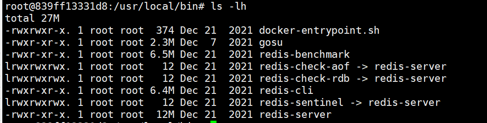
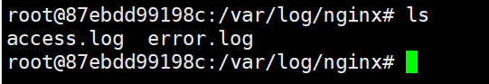
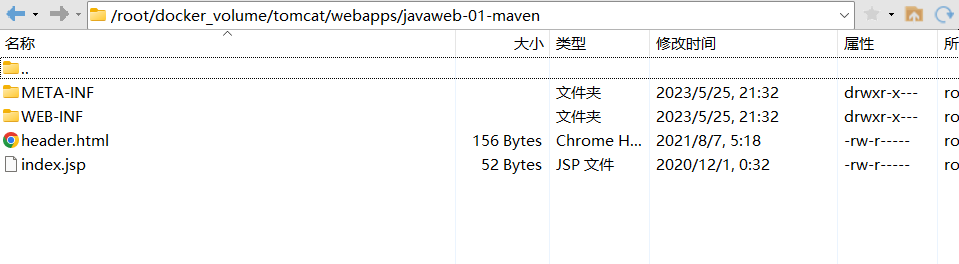
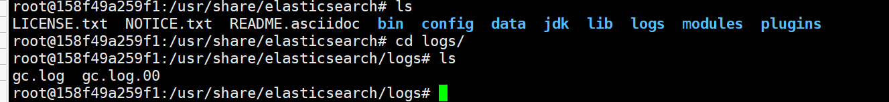
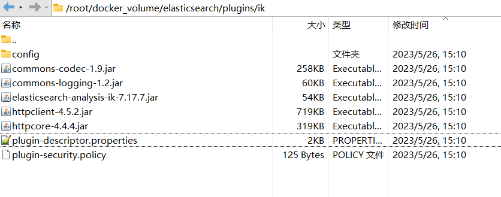
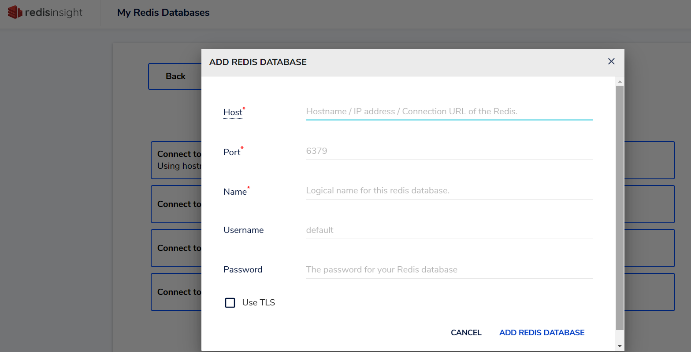

0.问题
1.时区同步
1 | -v /etc/localtime:/etc/localtime |
通过挂载宿主机的
/etc/localtime文件（包含时区配置），使容器使用与宿主机相同的时区规则确保容器内系统命令（如
date）和应用程序的时间显示与宿主机一致，避免时区差异导致的时间偏差（如 UTC 与 CST 相差 8 小时）实现原理：
机制 说明 文件覆盖 容器内的 /etc/localtime被替换为宿主机的同名文件依赖系统库 容器内的 glibc 等库通过读取该文件确定时区 动态更新 若宿主机时区变更，重启容器后会自动同步新时区
| 方法 | 特点 | 优先级 |
|---|---|---|
-v /etc/localtime 挂载 |
依赖宿主机文件，兼容性高（适合老旧应用） | 较低 |
-e TZ=Asia/Shanghai |
通过环境变量设置，不依赖宿主机文件（适合现代应用如 Java/Tomcat） | 更高 |
2.初始化容器，宿主机数据卷内容为空，覆盖容器
Docker 容器初始化时宿主机数据卷为空导致容器内文件被覆盖
Docker 数据卷挂载以宿主机目录内容为主导，空目录会替换容器目录
解决方案
方式一：预先复制一份容器内需要挂载数据卷的内容（推荐）
1
2
3
4
5
6
7
8# ① 启动临时容器（不挂载数据卷）
docker run ...
# ② 将容器内文件复制到宿主机目录
docker cp 容器名称:目录 宿主机目录
# ③ 删除临时容器
docker rm ...
# ④ 正式启动容器并挂载
docker run ...方式二：使用命名数据卷(命名卷首次挂载时自动复制容器目录内容到宿主机)
1.Docker安装
https://xiaguyangdie.github.io/2023/02/26/Docker/
2.Redis(pass)
2.1 配置文件存储路径
早期的 Docker Redis 在容器中的配置文件，在一个专门的、特定的目录下，但现在没有了
从 5.x 版本开始 Docker Redis 改变了思路：可以将配置文件放在任意位置，然后在 Redis 启动时告诉 Redis 从哪里加载配置文件即可
因此想要配置容器内的 Redis，那么你需要在宿主机中准备好一个配置文件，然后映射到容器中的任意位置，然后将这个「任意位置」告诉容器中的 Redis
从GitHub上https://github.com/redis/redis下载对应版本的配置文件拷贝到对应数据卷的位置：
修改redis.conf
1
2
3
4
5
6
7
8
9
10
11
12
13
14
15
16
17
18# 允许访问的地址，默认是127.0.0.1，会导致只能在本地访问。修改为0.0.0.0则可以在任意IP访问，生产环境不要设置为0.0.0.0
bind 0.0.0.0
# 守护进程，修改为yes后即可后台运行
#yes会使配置文件方式启动redis失败
daemonize no
# 密码，设置后访问Redis必须输入密码
requirepass 123456
# 监听的端口
port 6379
appendonly yes #持久化
dir /data #输入本地redis数据库存放文件夹
# 设置redis能够使用的最大内存
maxmemory 512mb
# 日志文件，默认为空，不记录日志，可以指定日志文件名
logfile "redis.log"
2.2 数据存储路径
数据存储路径，日志文件也在其中
1 | /data |
服务启动命令路径
1 | /usr/local/bin |

2.3 启动命令
1 | docker run \ |
-v /etc/localtime:/etc/localtime ，使宿主机时间和docker时间一致
-v /root/docker_volume/redis/data:/data，数据挂载
-v /root/docker_volume/redis/conf:/etc/redis/conf，配置文件挂载
–privileged=true，容器内权限为root用户权限，否则只是普通用户
–restart=always，在重启docker时，自动启动该容器
-d ，在后台运行容器，并且打印容器id
2.4 redis命令所在目录
1 | /usr/local/bin |
2.5 挂载目录导致容器内文件清空
（有问题）
- 宿主机和容器内的文件或者目录进行绑定的方式有两种：
- 1.挂载文件或目录挂载容器内的文件或目录：如果挂载目录为空，则容器内的目录也会被清空；文件则是覆盖
- 2.数据卷：可以解决挂载文件的问题
- 数据卷中没有文件时，会将容器目录中的文件挂载到数据卷中，数据卷中有文件时，会将数据卷中的文件覆盖容器目录中的文件
- 数据卷不存在时会自动创建
- 所以，后续docker安装软件，除非个别清空，均使用数据卷挂载容器内的目录或者文件
3.MySQL安装(pass)
3.1 数据存储路径
1 | docker run \ |
数据存储路径
1
/var/lib/mysql
日志存储路径：
1
2
3/var/log/mysql
# 或
/var/log配置文件存储路径
1
/etc/mysql

3.2 安装
1 | #log-error=/var/log/mysqld.log 日志文件打印默认注释 |
1 | docker cp mysql:/var/lib/mysql /root/docker_volume/mysql |
4.RabbitMQ安装(pass)
4.1 数据存储路径
rabbitmq默认账号和密码是:guest ，默认情况只能在 localhost访问，所以我们需要通过刚才创建的admin用户进行登录。输入 http://IP地址:15672 即可完成访问，账号密码都为admin
1 | docker run \ |
消息存储路径
1
/var/lib/rabbitmq
1
2
3
4
5
6
7
8
9
10/var/lib/rabbitmq/mnesia/
└── rabbit@[hostname]/ # 节点特定目录
├── cluster_nodes.config # 集群节点配置
├── queues/ # 队列元数据
│ └── rabbit_queue_index/ # 队列索引
├── msg_store_persistent/ # 持久化消息存储
├── msg_store_transient/ # 临时消息存储
├── schema.DAT # 数据库架构
└── recovery.dets # 恢复文件日志存储路径
1
/var/log/rabbitmq
- RabbitMQ默认日志存放路径： /var/log/rabbitmq/rabbit@xxx.log，日志包含了RabbitMQ的版本号、Erlang的版本号、RabbitMQ服务节点名称、cookie的hash值、RabbitMQ配置文件地址、内存限制、磁盘限制、默认账户guest的创建以及权限配置等等
配置文件存储路径
1
/etc/rabbitmq
4.2 安装
暂时不做宿主机挂载
1 | docker run \ |
5.MongoDB安装
5.1 数据存储路径
1 | /data |
5.2 配置文件存储路径
没发现mongodb.conf
1 | /etc/mongod.conf.orig |
1 | # mongod.conf |
5.3 启动命令
1 | docker run \ |
-e MONGO_INITDB_ROOT_USERNAME=admin -e MONGO_INITDB_ROOT_PASSWORD=123456 指定容器内的环境变量 初始化容器账号、密码
–auth，需要密码才能访问容器服务
6.Nginx安装（pass）
6.1 数据存储路径
配置文件存储路径
1
/etc/nginx/
数据存储路径
1
/usr/share/nginx/html
日志存储路径
1
/var/log/nginx

6.2 安装
1.复制相关的文件到宿主机
1 | # 生成容器 |
2.挂载安装
1 | docker run \ |
7.Httpd安装
7.1 数据存储路径
配置文件存储路径
1
/usr/local/apache2/conf
数据存储路径
1
/usr/local/apache2/htdocs
日志存储路径
1
/usr/local/apache2/logs
7.2 安装
1 | docker run \ |
8.reader安装
1 | docker run \ |
9.Java安装
1 | docker run \ |
10.Tomcat(pass)
10.1 数据存储路径
1 | docker run \ |
- 数据存储路径
1 | /usr/local/tomcat |
与Windows下的tomcat目录结构类似
多了两个目录
- native-jni-lib
- webapps.dist
默认webpps目录内为空，内容在webapps.dist目录下
和Windows安装目录webapps内容一样
10.2 安装
1 | cp -r webapps.dist/* webapps/ |
1 | docker cp tomcat:/usr/local/tomcat/conf /root/docker_volume/tomcat |
打好一个war包
将war包复制到宿主机webapps目录下，tomcat自动将war包解压

谷歌浏览器访问项目
报错
1 | java.lang.ClassCastException: class com.yang.HelloServlet cannot be cast to class jakarta.servlet.Servlet (com.yang.HelloServlet is in unnamed module of loader org.apache.catalina.loader.ParallelWebappClassLoader @25c6da3; jakarta.servlet.Servlet is in unnamed module of loader java.net.URLClassLoader @3d646c37) |
- 原因： Tomcat中javax.servlet 确实被换成了 jaraka.servlet（tomcat 10前后）
重新安装低于tomcat10版本的
1 | docker stop tomcat |
日志文件
11.Elasticsearch
11.1 Elasticsearch
11.1.1 数据存储路径
1.下载镜像
1 | docker pull elasticsearch:7.17.10 |
2.打包镜像：因为下载很慢，所以打包方便迁移使用
1 | docker save -o elasticsearch-7.10.17.tar elasticsearch:7.17.10 |
3.基本安装
1 | docker run \ |
数据存储路径
1
/usr/share/elasticsearch/data
配置文件存储路径
1
/usr/share/elasticsearch/config
日志存储路径
1
/usr/share/elasticsearch/logs

插件存储路径
1
/usr/share/elasticsearch/plugins
4.复制配置文件到宿主机目录
1 | docker cp elasticsearch:/usr/share/elasticsearch/config/elasticsearch.yml /root/docker_volume/elasticsearch/config |
5.复制基本数据到宿主机目录
1 | docker cp elasticsearch:/usr/share/elasticsearch/data/. /root/docker_volume/elasticsearch/data |
6.复制日志文件到宿主机目录
不复制日志文件，则直接挂载日志目录会报错
或者不挂载日志目录：直接通过
docker logs elasticsearch查看日志或者进入容器查看日志文件
1 | docker cp elasticsearch:/usr/share/elasticsearch/logs/. /root/docker_volume/elasticsearch/logs |
7.删除此容器
1 | docker stop elasticsearch |
11.1.2 安装
1.创建网络
- 因为还需要部署kibana容器，因此需要让es和kibana容器互联。这里先创建一个网络：
1 | docker network create es-kibana-net |
2.安装elasticsearch，创建elasticsearch容器
- 运行docker命令，部署单点elasticsearch：
1 | docker run \ |
- 命令解释：
-e "cluster.name=es-docker-cluster"：设置集群名称-e "http.host=0.0.0.0"：监听的地址，可以外网访问-e "ES_JAVA_OPTS=-Xms512m -Xmx512m"：内存大小-e "discovery.type=single-node"：非集群模式--network es-kibana-net：加入一个名为es-kibana-net的网络中-p 9200:9200：端口映射配置
11.2 Kibana
- kibana可以给提供一个elasticsearch的可视化界面，便于学习
1.下载镜像
1 | docker pull kibana:7.17.10 |
2.打包镜像：因为下载很慢，所以打包方便迁移使用
1 | docker save -o kibana-7.10.17.tar kibana:7.17.10 |
3.部署
- 运行docker命令，部署kibana
1 | docker run -d \ |
--network es-kibana-net：加入一个名为es-kibana-net的网络中，与elasticsearch在同一个网络中-e ELASTICSEARCH_HOSTS=http://elasticsearch:9200"：设置elasticsearch的地址，因为kibana已经与elasticsearch在一个网络，因此可以用容器名直接访问elasticsearch-p 5601:5601：端口映射配置
kibana启动一般比较慢，需要多等待一会，可以通过命令：
1
docker logs -f kibana
查看运行日志，当查看到下面的日志，说明成功：
4.DevTools
kibana中提供了一个DevTools界面：
5.添加ik分词器插件
重启elasticsearch容器报错
1
2
3docker restart elasticsearch
docker logs -f elasticsearch版本不一致，更换ik版本
11.3 ik分词器
1.下载地址
https://github.com/medcl/elasticsearch-analysis-ik/releases
2.下载与elasticsearch一致的版本
发现没有7.17.10版本的ik分词器，则下载一个版本最接近的ik分词器
解压到ik，复制到plugins目录下

修改配置文件/root/docker_volume/elasticsearch/plugins/ik/plugin-descriptor.properties里的版本号
重启elasticsearch容器
1
2
3docker restart elasticsearch
docker logs -f elasticsearch
12.redislabs/redisinsight
12.1 数据存储路径
1 | docker pull redislabs/redisinsight |
数据存储路径：
1
/db
12.2 安装
1 | docker stop redisinsight |

- 主机（Host）：是群晖的 IP ，也就是 192.168.0.197
- 端口（Port）：为主机的 本地端口 而不是 容器端口 ，所以是 6479
- 名称（Name）：并没有设置过，但是这里又是必填的，所以随便设了个 redis
- 用户名（Username）和密码（Password），Username没设置过，所以直接留空，Password设置了就必需填
13.Neo4j
13.1 数据存储路径
1 | -v /home/neo4j/data:/data # 把容器内的数据目录挂载到宿主机的对应目录下 |
1 | docker pull neo4j |
配置文件存储路径
1
/var/lib/neo4j/conf/neo4j.conf
1
2
3
4
5
6
7
8
9
10
11
12
13
14
15
16
17
18
19
20
21
22
23
24
25
26
27
28
29
30
31
32
33
34
35
36
37
38
39
40
41
42
43
44
45
46
47
48
49
50
51
52
53
54
55
56
57
58
59
60
61
62
63
64
65
66
67
68
69
70
71
72
73
74
75
76
77
78
79
80
81
82
83
84
85
86
87
88
89
90
91
92
93
94
95
96
97
98
99
100
101
102
103
104
105
106
107
108
109
110
111
112
113
114
115
116
117
118
119
120
121
122
123
124
125
126
127
128
129
130
131
132
133
134
135
136
137
138
139
140
141
142
143
144
145
146
147
148
149
150
151
152
153
154
155
156
157
158
159
160
161
162
163
164
165
166
167
168
169
170
171
172
173
174
175
176
177
178
179
180
181
182
183
184
185
186
187
188
189
190
191
192
193
194
195
196
197
198
199
200
201
202
203
204
205
206
207
208
209
210
211
212
213
214
215
216
217
218
219
220
221
222
223
224
225
226
227
228
229
230
231
232
233
234
235
236
237
238
239
240
241
242
243
244
245
246
247
248
249
250
251
252
253
254
255
256
257
258
259
260
261
262
263
264
265
266
267
268
269
270
271
272
273
274
275
276
277
278
279
280
281
282
283
284
285
286
287
288
289
290
291
292
293
294
295
296
297
298
299
300
301
302
303
304
305
306
307
308
309
310
311
312
313
314
315
316
317
318
319
320
321
322
323
324
325
326
327
328
329
330
331
332
333
334
335
336
337
338
339
340
341
342
343
344
345
346
347
348
349
350
351
352
353
354
355
356
357
358
359
360
361
362
363#*****************************************************************
# Neo4j configuration
#
# For more details and a complete list of settings, please see
# https://neo4j.com/docs/operations-manual/current/reference/configuration-settings/
#*****************************************************************
# The name of the default database
#dbms.default_database=neo4j
# Paths of directories in the installation.
#dbms.directories.data=data
#dbms.directories.plugins=plugins
#dbms.directories.logs=logs
#dbms.directories.lib=lib
#dbms.directories.run=run
#dbms.directories.licenses=licenses
#dbms.directories.transaction.logs.root=data/transactions
# This setting constrains all `LOAD CSV` import files to be under the `import` directory. Remove or comment it out to
# allow files to be loaded from anywhere in the filesystem; this introduces possible security problems. See the
# `LOAD CSV` section of the manual for details.
dbms.directories.import=import
# Whether requests to Neo4j are authenticated.
# To disable authentication, uncomment this line
#dbms.security.auth_enabled=false
# Enable this to be able to upgrade a store from an older version.
#dbms.allow_upgrade=true
#********************************************************************
# Memory Settings
#********************************************************************
#
# Memory settings are specified kilobytes with the 'k' suffix, megabytes with
# 'm' and gigabytes with 'g'.
# If Neo4j is running on a dedicated server, then it is generally recommended
# to leave about 2-4 gigabytes for the operating system, give the JVM enough
# heap to hold all your transaction state and query context, and then leave the
# rest for the page cache.
# Java Heap Size: by default the Java heap size is dynamically calculated based
# on available system resources. Uncomment these lines to set specific initial
# and maximum heap size.
#dbms.memory.heap.initial_size=512m
#dbms.memory.heap.max_size=512m
# The amount of memory to use for mapping the store files.
# The default page cache memory assumes the machine is dedicated to running
# Neo4j, and is heuristically set to 50% of RAM minus the Java heap size.
#dbms.memory.pagecache.size=10g
# Limit the amount of memory that all of the running transaction can consume.
# By default there is no limit.
#dbms.memory.transaction.global_max_size=256m
# Limit the amount of memory that a single transaction can consume.
# By default there is no limit.
#dbms.memory.transaction.max_size=16m
# Transaction state location. It is recommended to use ON_HEAP.
dbms.tx_state.memory_allocation=ON_HEAP
#*****************************************************************
# Network connector configuration
#*****************************************************************
# With default configuration Neo4j only accepts local connections.
# To accept non-local connections, uncomment this line:
#dbms.default_listen_address=0.0.0.0
# You can also choose a specific network interface, and configure a non-default
# port for each connector, by setting their individual listen_address.
# The address at which this server can be reached by its clients. This may be the server's IP address or DNS name, or
# it may be the address of a reverse proxy which sits in front of the server. This setting may be overridden for
# individual connectors below.
#dbms.default_advertised_address=localhost
# You can also choose a specific advertised hostname or IP address, and
# configure an advertised port for each connector, by setting their
# individual advertised_address.
# By default, encryption is turned off.
# To turn on encryption, an ssl policy for the connector needs to be configured
# Read more in SSL policy section in this file for how to define a SSL policy.
# Bolt connector
dbms.connector.bolt.enabled=true
#dbms.connector.bolt.tls_level=DISABLED
#dbms.connector.bolt.listen_address=:7687
#dbms.connector.bolt.advertised_address=:7687
# HTTP Connector. There can be zero or one HTTP connectors.
dbms.connector.http.enabled=true
#dbms.connector.http.listen_address=:7474
#dbms.connector.http.advertised_address=:7474
# HTTPS Connector. There can be zero or one HTTPS connectors.
dbms.connector.https.enabled=false
#dbms.connector.https.listen_address=:7473
#dbms.connector.https.advertised_address=:7473
# Number of Neo4j worker threads.
#dbms.threads.worker_count=
#*****************************************************************
# SSL policy configuration
#*****************************************************************
# Each policy is configured under a separate namespace, e.g.
# dbms.ssl.policy.<scope>.*
# <scope> can be any of 'bolt', 'https', 'cluster' or 'backup'
#
# The scope is the name of the component where the policy will be used
# Each component where the use of an ssl policy is desired needs to declare at least one setting of the policy.
# Allowable values are 'bolt', 'https', 'cluster' or 'backup'.
# E.g if bolt and https connectors should use the same policy, the following could be declared
# dbms.ssl.policy.bolt.base_directory=certificates/default
# dbms.ssl.policy.https.base_directory=certificates/default
# However, it's strongly encouraged to not use the same key pair for multiple scopes.
#
# N.B: Note that a connector must be configured to support/require
# SSL/TLS for the policy to actually be utilized.
#
# see: dbms.connector.*.tls_level
# SSL settings (dbms.ssl.policy.<scope>.*)
# .base_directory Base directory for SSL policies paths. All relative paths within the
# SSL configuration will be resolved from the base dir.
#
# .private_key A path to the key file relative to the '.base_directory'.
#
# .private_key_password The password for the private key.
#
# .public_certificate A path to the public certificate file relative to the '.base_directory'.
#
# .trusted_dir A path to a directory containing trusted certificates.
#
# .revoked_dir Path to the directory with Certificate Revocation Lists (CRLs).
#
# .verify_hostname If true, the server will verify the hostname that the client uses to connect with. In order
# for this to work, the server public certificate must have a valid CN and/or matching
# Subject Alternative Names.
#
# .client_auth How the client should be authorized. Possible values are: 'none', 'optional', 'require'.
#
# .tls_versions A comma-separated list of allowed TLS versions. By default only TLSv1.2 is allowed.
#
# .trust_all Setting this to 'true' will ignore the trust truststore, trusting all clients and servers.
# Use of this mode is discouraged. It would offer encryption but no security.
#
# .ciphers A comma-separated list of allowed ciphers. The default ciphers are the defaults of
# the JVM platform.
# Bolt SSL configuration
#dbms.ssl.policy.bolt.enabled=true
#dbms.ssl.policy.bolt.base_directory=certificates/bolt
#dbms.ssl.policy.bolt.private_key=private.key
#dbms.ssl.policy.bolt.public_certificate=public.crt
#dbms.ssl.policy.bolt.client_auth=NONE
# Https SSL configuration
#dbms.ssl.policy.https.enabled=true
#dbms.ssl.policy.https.base_directory=certificates/https
#dbms.ssl.policy.https.private_key=private.key
#dbms.ssl.policy.https.public_certificate=public.crt
#dbms.ssl.policy.https.client_auth=NONE
# Cluster SSL configuration
#dbms.ssl.policy.cluster.enabled=true
#dbms.ssl.policy.cluster.base_directory=certificates/cluster
#dbms.ssl.policy.cluster.private_key=private.key
#dbms.ssl.policy.cluster.public_certificate=public.crt
# Backup SSL configuration
#dbms.ssl.policy.backup.enabled=true
#dbms.ssl.policy.backup.base_directory=certificates/backup
#dbms.ssl.policy.backup.private_key=private.key
#dbms.ssl.policy.backup.public_certificate=public.crt
#*****************************************************************
# Logging configuration
#*****************************************************************
# To enable HTTP logging, uncomment this line
#dbms.logs.http.enabled=true
# Number of HTTP logs to keep.
#dbms.logs.http.rotation.keep_number=5
# Size of each HTTP log that is kept.
#dbms.logs.http.rotation.size=20m
# To enable GC Logging, uncomment this line
#dbms.logs.gc.enabled=true
# GC Logging Options
# see https://docs.oracle.com/en/java/javase/11/tools/java.html#GUID-BE93ABDC-999C-4CB5-A88B-1994AAAC74D5
#dbms.logs.gc.options=-Xlog:gc*,safepoint,age*=trace
# Number of GC logs to keep.
#dbms.logs.gc.rotation.keep_number=5
# Size of each GC log that is kept.
#dbms.logs.gc.rotation.size=20m
# Log level for the debug log. One of DEBUG, INFO, WARN and ERROR. Be aware that logging at DEBUG level can be very verbose.
#dbms.logs.debug.level=INFO
# Size threshold for rotation of the debug log. If set to zero then no rotation will occur. Accepts a binary suffix "k",
# "m" or "g".
#dbms.logs.debug.rotation.size=20m
# Maximum number of history files for the internal log.
#dbms.logs.debug.rotation.keep_number=7
#*****************************************************************
# Miscellaneous configuration
#*****************************************************************
# Enable this to specify a parser other than the default one.
#cypher.default_language_version=3.5
# Determines if Cypher will allow using file URLs when loading data using
# `LOAD CSV`. Setting this value to `false` will cause Neo4j to fail `LOAD CSV`
# clauses that load data from the file system.
#dbms.security.allow_csv_import_from_file_urls=true
# Value of the Access-Control-Allow-Origin header sent over any HTTP or HTTPS
# connector. This defaults to '*', which allows broadest compatibility. Note
# that any URI provided here limits HTTP/HTTPS access to that URI only.
#dbms.security.http_access_control_allow_origin=*
# Value of the HTTP Strict-Transport-Security (HSTS) response header. This header
# tells browsers that a webpage should only be accessed using HTTPS instead of HTTP.
# It is attached to every HTTPS response. Setting is not set by default so
# 'Strict-Transport-Security' header is not sent. Value is expected to contain
# directives like 'max-age', 'includeSubDomains' and 'preload'.
#dbms.security.http_strict_transport_security=
# Retention policy for transaction logs needed to perform recovery and backups.
dbms.tx_log.rotation.retention_policy=1 days
# Only allow read operations from this Neo4j instance. This mode still requires
# write access to the directory for lock purposes.
#dbms.read_only=false
# Comma separated list of JAX-RS packages containing JAX-RS resources, one
# package name for each mountpoint. The listed package names will be loaded
# under the mountpoints specified. Uncomment this line to mount the
# org.neo4j.examples.server.unmanaged.HelloWorldResource.java from
# neo4j-server-examples under /examples/unmanaged, resulting in a final URL of
# http://localhost:7474/examples/unmanaged/helloworld/{nodeId}
#dbms.unmanaged_extension_classes=org.neo4j.examples.server.unmanaged=/examples/unmanaged
# A comma separated list of procedures and user defined functions that are allowed
# full access to the database through unsupported/insecure internal APIs.
#dbms.security.procedures.unrestricted=my.extensions.example,my.procedures.*
# A comma separated list of procedures to be loaded by default.
# Leaving this unconfigured will load all procedures found.
#dbms.security.procedures.allowlist=apoc.coll.*,apoc.load.*,gds.*
#********************************************************************
# JVM Parameters
#********************************************************************
# G1GC generally strikes a good balance between throughput and tail
# latency, without too much tuning.
dbms.jvm.additional=-XX:+UseG1GC
# Have common exceptions keep producing stack traces, so they can be
# debugged regardless of how often logs are rotated.
dbms.jvm.additional=-XX:-OmitStackTraceInFastThrow
# Make sure that `initmemory` is not only allocated, but committed to
# the process, before starting the database. This reduces memory
# fragmentation, increasing the effectiveness of transparent huge
# pages. It also reduces the possibility of seeing performance drop
# due to heap-growing GC events, where a decrease in available page
# cache leads to an increase in mean IO response time.
# Try reducing the heap memory, if this flag degrades performance.
dbms.jvm.additional=-XX:+AlwaysPreTouch
# Trust that non-static final fields are really final.
# This allows more optimizations and improves overall performance.
# NOTE: Disable this if you use embedded mode, or have extensions or dependencies that may use reflection or
# serialization to change the value of final fields!
dbms.jvm.additional=-XX:+UnlockExperimentalVMOptions
dbms.jvm.additional=-XX:+TrustFinalNonStaticFields
# Disable explicit garbage collection, which is occasionally invoked by the JDK itself.
dbms.jvm.additional=-XX:+DisableExplicitGC
#Increase maximum number of nested calls that can be inlined from 9 (default) to 15
dbms.jvm.additional=-XX:MaxInlineLevel=15
# Disable biased locking
dbms.jvm.additional=-XX:-UseBiasedLocking
# Restrict size of cached JDK buffers to 256 KB
dbms.jvm.additional=-Djdk.nio.maxCachedBufferSize=262144
# More efficient buffer allocation in Netty by allowing direct no cleaner buffers.
dbms.jvm.additional=-Dio.netty.tryReflectionSetAccessible=true
# Exits JVM on the first occurrence of an out-of-memory error. Its preferable to restart VM in case of out of memory errors.
# dbms.jvm.additional=-XX:+ExitOnOutOfMemoryError
# Expand Diffie Hellman (DH) key size from default 1024 to 2048 for DH-RSA cipher suites used in server TLS handshakes.
# This is to protect the server from any potential passive eavesdropping.
dbms.jvm.additional=-Djdk.tls.ephemeralDHKeySize=2048
# This mitigates a DDoS vector.
dbms.jvm.additional=-Djdk.tls.rejectClientInitiatedRenegotiation=true
# Enable remote debugging
#dbms.jvm.additional=-agentlib:jdwp=transport=dt_socket,server=y,suspend=n,address=*:5005
# This filter prevents deserialization of arbitrary objects via java object serialization, addressing potential vulnerabilities.
# By default this filter whitelists all neo4j classes, as well as classes from the hazelcast library and the java standard library.
# These defaults should only be modified by expert users!
# For more details (including filter syntax) see: https://openjdk.java.net/jeps/290
#dbms.jvm.additional=-Djdk.serialFilter=java.**;org.neo4j.**;com.neo4j.**;com.hazelcast.**;net.sf.ehcache.Element;com.sun.proxy.*;org.openjdk.jmh.**;!*
# Increase the default flight recorder stack sampling depth from 64 to 256, to avoid truncating frames when profiling.
dbms.jvm.additional=-XX:FlightRecorderOptions=stackdepth=256
# Allow profilers to sample between safepoints. Without this, sampling profilers may produce less accurate results.
dbms.jvm.additional=-XX:+UnlockDiagnosticVMOptions
dbms.jvm.additional=-XX:+DebugNonSafepoints
# Disable logging JMX endpoint.
dbms.jvm.additional=-Dlog4j2.disable.jmx=true
# Limit JVM metaspace and code cache to allow garbage collection. Used by cypher for code generation and may grow indefinitely unless constrained.
# Useful for memory constrained environments
#dbms.jvm.additional=-XX:MaxMetaspaceSize=1024m
#dbms.jvm.additional=-XX:ReservedCodeCacheSize=512m
#********************************************************************
# Wrapper Windows NT/2000/XP Service Properties
#********************************************************************
# WARNING - Do not modify any of these properties when an application
# using this configuration file has been installed as a service.
# Please uninstall the service before modifying this section. The
# service can then be reinstalled.
# Name of the service
dbms.windows_service_name=neo4j
#********************************************************************
# Other Neo4j system properties
#********************************************************************
dbms.memory.pagecache.size=512M
dbms.default_listen_address=0.0.0.0
dbms.directories.logs=/logs数据存储路径
1
/var/lib/neo4j/data
1
2
3
4
5
6
7
8
9
10
11
12
13
14
15
16
17
18
19
20
21
22
23
24
25
26
27
28root@dac1ae4e4eca:/var/lib/neo4j/data# ls
databases dbms server_id transactions
root@dac1ae4e4eca:/var/lib/neo4j/data# cd databases/
root@dac1ae4e4eca:/var/lib/neo4j/data/databases# ls
neo4j store_lock system
root@dac1ae4e4eca:/var/lib/neo4j/data/databases# cd ../dbms/
root@dac1ae4e4eca:/var/lib/neo4j/data/dbms# ls
auth.ini
root@dac1ae4e4eca:/var/lib/neo4j/data/dbms# cat auth.ini
neo4j:SHA-256,fe98496dba6072e5e80171d935eb2f71e37d87b4d4436aeac4b74058629806d0,6dac2083d03859c559d32821135cdfc0383d31f6dfc0a5f4d052bd456d2ebfd1,1024:
root@dac1ae4e4eca:/var/lib/neo4j/data/dbms# cd ../server_id
bash: cd: ../server_id: Not a directory
root@dac1ae4e4eca:/var/lib/neo4j/data/dbms# cd ../
root@dac1ae4e4eca:/var/lib/neo4j/data# ls
databases dbms server_id transactions
root@dac1ae4e4eca:/var/lib/neo4j/data# cat server_id
+Ͷ
챚 \V¿root@dac1ae4e4eca:/var/lib/neo4j/data# Xshell
bash: Xshell: command not found
root@dac1ae4e4eca:/var/lib/neo4j/data# cd transactions/
root@dac1ae4e4eca:/var/lib/neo4j/data/transactions# ls
neo4j system
root@dac1ae4e4eca:/var/lib/neo4j/data/transactions# cat neo4j/
cat: neo4j/: Is a directory
root@dac1ae4e4eca:/var/lib/neo4j/data/transactions# cd neo4j/
root@dac1ae4e4eca:/var/lib/neo4j/data/transactions/neo4j# ls
checkpoint.0 neostore.transaction.db.0
root@dac1ae4e4eca:/var/lib/neo4j/data/transactions/neo4j#日志存储路径
1
/var/lib/neo4j/logs
挂载数据导入目录路径
1
/var/lib/neo4j/import
13.2 安装
1 | docker stop neo4j |
修改配置文件
1 | # 进入容器配置目录挂载在宿主机的对应目录，我这里是/home/neo4j/conf |